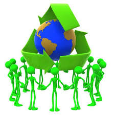
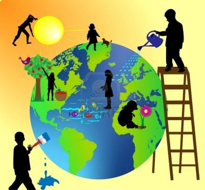

Si cada uno de nosotros contribuye en el cuidado y protección del ambiente podemos salvar el planeta.A continuación veremos algunos consejos útiles para proteger nuestro planeta.

*Afinar y dar mantenimiento a los automóviles
*Evitar la quema de basura y llantas, así como el uso de cohetes artificiales
*Evitar comprar artículos desechables y plásticos que no son biodegradables.
*Reciclar la basura
*No arrojar basura en la calle, bosques y parques, envolverla o taparla bien en la casa
*Usar racionalmente los plaguicidas
*Evitar el consumo de tabaco
*Cuidar los bosques, no provocar incendios ni destruir las zonas verdes de la ciudad
*Posponer las tareas de jardinería que requieran el uso de herramientas a gasolina en días de alto nivel de de ozono
*Consume alimentos orgánicos o al menos aquellos no hayan sido sometidos a un uso tan intensivo de agroquímicos. (puedes cultivarlos en tú azotea con composta hecha por ti mismo)
Restringir la limpieza en seco.
*Evita el uso de pinturas, aceites y solventes en días de alta concentración de ozono.
*Reduce el consumo de electricidad, lo cual contribuirá a disminuir las emanaciones de contaminantes y partículas.
*Prende el carbón de leña con un encendedor eléctrico en vez de hacerlo con combustible líquido.
*Aplica el poder de las 3 Erres: Reduce-Reutiliza-Recicla. Un menor consumo redundará en menor contaminación atmosférica de todo tipo.
